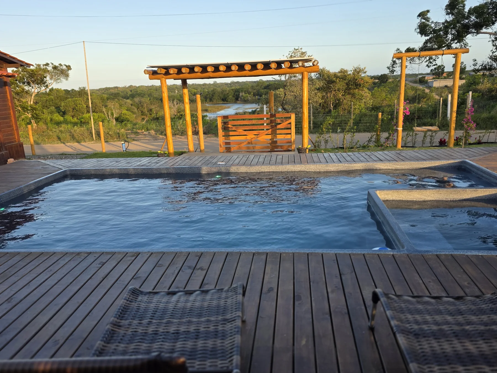
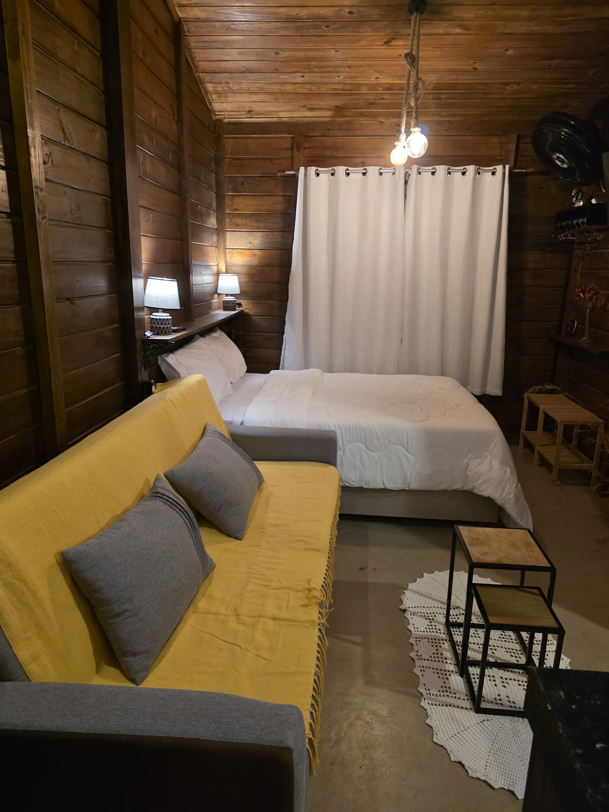
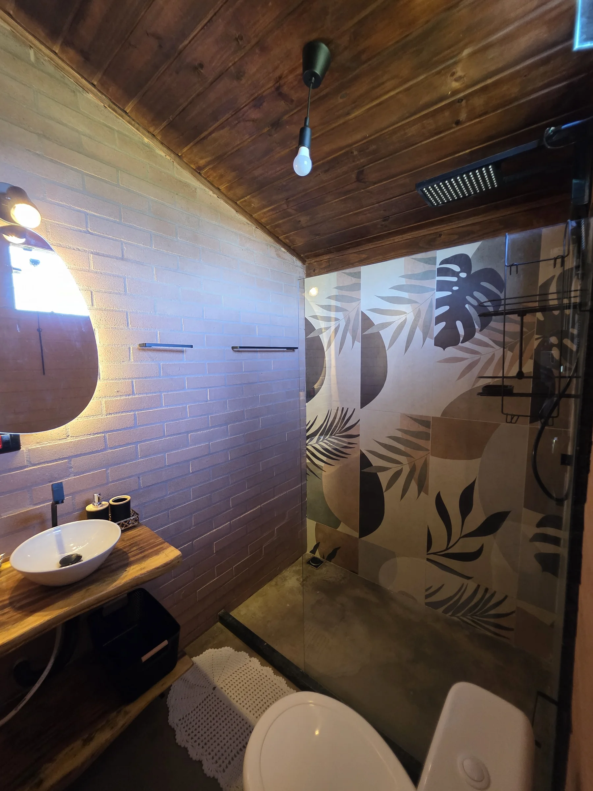
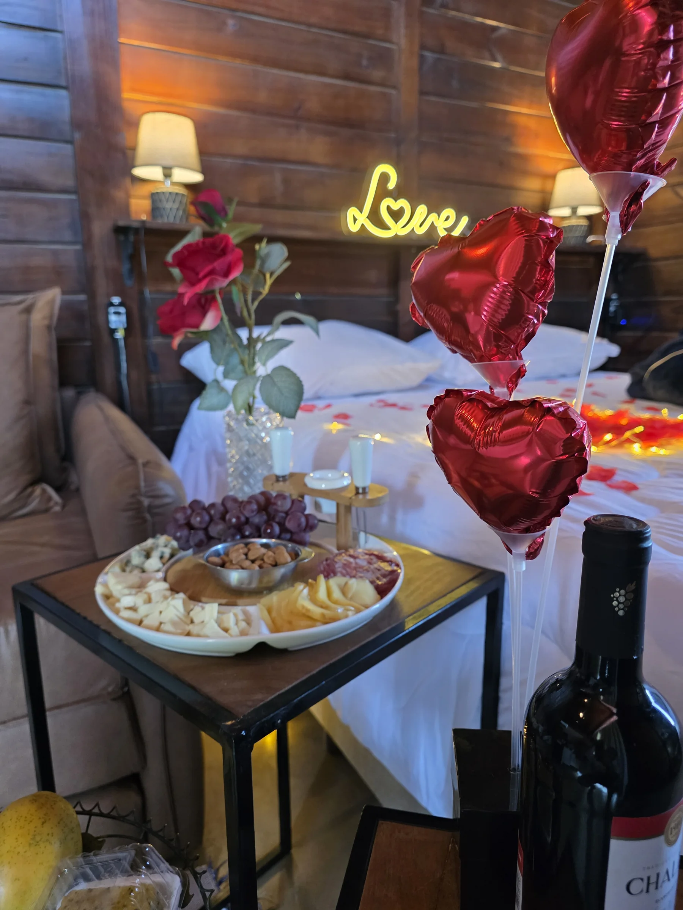

01Piscina aquecida + SpaCHALEZINHO VILLE · SIGNATURE
Ville Signature
Escolha as datas e consulte a disponibilidade pelo WhatsApp.
O mais completo dos três: piscina aquecida privativa, spa e terreno exclusivo para vocês.
Piscina aquecidaSpaLareira de jardimRedesChurrasqueiraCozinha completaSecadorEnxovalÁrea externa privativaGaragem